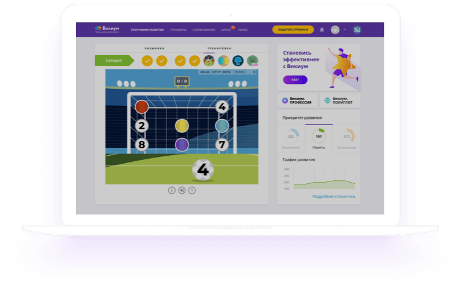

<section class="science-container">
    <div class="science">
        
        <div class="science-content">
            <h2 class="science-content science-content__header">Science as a game</h2>
            <p class="science-content science-content__description">
                All Wikium games are based on scientific knowledge about the work of the 
                brain - Russian and foreign techniques. To make brain training interesting 
                and easy, we apply game mechanics and an accessible interface to them. As a 
                result, you get exciting games that train your brain.
            </p>
        </div>
    </div>
</section>